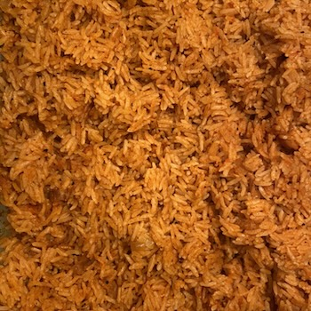
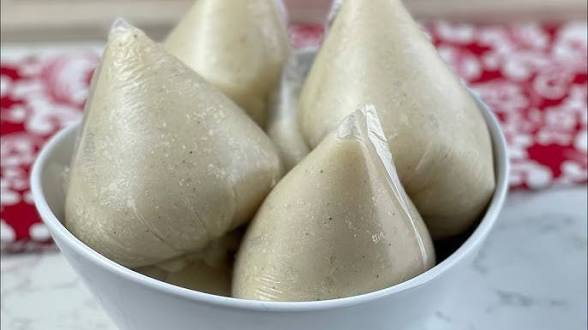
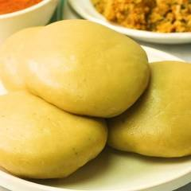
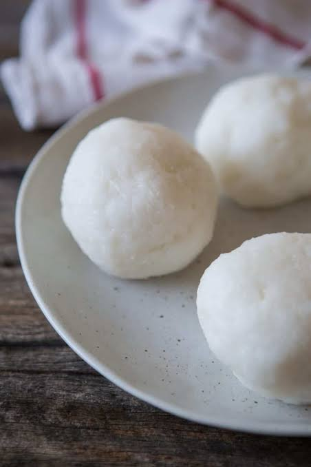

Jollof Rice Recipe
Prepare the Blended Base: In a blender, combine the chopped tomatoes, red bell pepper, onion, garlic, ginger, and Scotch bonnet peppers with ½ cup of water. Blend until smooth and set aside.
Cook the Stew Base: Heat the oil in a large, heavy-bottomed pot or Dutch oven over medium heat. Add the thinly sliced onion and sauté until soft and translucent, about 5-7 minutes.
Fry the Tomato Paste and Seasonings: Stir in the tomato paste and cook for another 3-5 minutes, stirring frequently, until it darkens in color and loses its raw, bitter taste. This is a crucial step for flavor development.
Simmer the Sauce: Pour in the blended pepper mixture and stir to combine. Add the curry powder, thyme, crushed bouillon cubes, and bay leaves. Bring the mixture to a simmer, then reduce the heat to medium-low. Cook, stirring occasionally, until the sauce thickens, reduces by about half, and oil starts to separate and rise to the surface (about 20-30 minutes).
Add Rice and Stock: Add the thoroughly rinsed rice to the pot and stir well, making sure every grain is coated in the sauce. Pour in the stock (or water) and season with salt and pepper to taste. The liquid should just cover the rice.
the Rice: Bring the mixture to a boil, then immediately reduce the heat to the lowest setting. Cover the pot tightly with a layer of aluminum foil before placing the lid on top to trap the steam effectively.
Simmer and Rest: Simmer gently for about 30-40 minutes, or until the rice is cooked through and the liquid is absorbed. Do not stir too often to prevent the rice from becoming mushy. Check intermittently towards the end of cooking. If the rice is still hard but the liquid is gone, you can add a splash more water and continue steaming on very low heat.
Fluff and Serve: Once cooked, turn off the heat and let the covered pot sit for 10 minutes. Remove the bay leaves and gently fluff the rice with a fork before serving. Ghana jollof is often served with sides like fried plantains, grilled chicken, or a fresh salad.
FRIED RICE RECIPE

Cook the rice: If not using pre-cooked rice, wash the rice and cook it with water, dark soy sauce, oil, and salt. Add curry or turmeric powder for extra flavor. Cook until the rice is soft, then let it cool completely.
Prepare the ingredients: Scramble the eggs and set them aside. Chop the onion, garlic, ginger, carrots, green pepper, and spring onions.
Sauté aromatics: Heat oil in a pan and sauté the chopped onion, garlic, and ginger until fragrant.
Add vegetables: Add the carrots and green peppers to the pan and stir-fry them until they are tender-crisp.
Combine and fry: Add the cooked and slightly warmed-up rice to the pan. Mix it well with the vegetables and seasonings.
Add eggs and soy sauce: Stir in the scrambled eggs and soy sauce. Mix everything together until the rice is evenly colored.
Finish and serve: Garnish with spring onions and serve hot.
WAAKYE RECIPE

Prepare the Beans and Leaves
Pick through the dried beans to remove any debris and wash them thoroughly.
Soak the beans for a few hours or overnight to reduce cooking time and aid digestion. Drain the soaking water.
Rinse the sorghum leaves and place them in a large pot with the washed beans.
Add enough water to cover the beans and leaves, about 4-5 cups, and bring to a boil.
Add the baking soda (if using), which helps enhance the deep purple color from the leaves.
Cook the Beans
Reduce the heat and simmer until the beans are about halfway or three-quarters cooked, but not mushy. This usually takes around 30-40 minutes, depending on whether you soaked them.
Add the Rice
Remove the sorghum leaves from the pot.
Rinse the rice well until the water runs clear to remove excess starch.
Add the washed rice to the pot with the beans. Add salt to taste and more water if needed (the water level should be just enough to cook the rice).
Stir the mixture well to combine the rice and beans evenly. 4.
Cook the Waakye
Bring the mixture to a boil over medium heat, then reduce the heat to very low and cover the pot tightly (you can cover with aluminum foil or parchment paper before the lid to trap steam).
Cook for about 20-30 minutes, stirring gently once or twice halfway through to prevent burning and ensure even cooking.
Once the water has evaporated and the rice is tender but the grains are still separate, the waakye is ready. If the rice is still undercooked, add a splash more water and continue cooking on low heat.
Stir in the optional coconut oil for a nice flavor and shine.
Serving Suggestions
Waakye is a complete meal often served with a variety of accompaniments
Shito (Ghanaian black chili sauce)
Waakye stew (tomato-based stew)
Gari (toasted cassava flakes)
Boiled eggs or fried fish/meat
Spaghetti and a simple side salad
BANKU RECIPE
Boiling: The mixture of fermented corn and cassava dough is added to boiling water.
Stirring: The mixture is stirred vigorously with a wooden spoon or stick to ensure even cooking and prevent it from sticking to the pot.
Thickening: The dough is cooked until it becomes a thick, pliable mass, often described as a pulp.
Forming: The cooked banku is then scooped out and, using wet hands or a spatula, is molded into small balls or oval shapes.
Serving: It is served hot, typically with savory stews or soups.
FUFU RECIPE
The ingredients are typically boiled and then pounded together into a dough using a mortar and pestle or a high-speed blender.
Stovetop versions involve cooking the blended mixture while stirring until it thickens into a dense dough.
Water is added as needed during the blending or cooking process to achieve the right consistency.
RED RED RECIPE

Boiling/Simmering: The black-eyed peas are first soaked (often overnight) and then boiled in water until they are tender.
Sautéing and Stewing: A sauce is prepared by sautéing ingredients like onions, tomatoes, ginger, garlic, and peppers in hot palm oil. The mixture is then simmered, allowing the flavors to meld and the sauce to thicken into a rich stew.
Frying: Ripe plantains are peeled, sliced, and fried in a separate pan of oil until golden brown. These are served as an essential side dish to the bean stew.
OKRO SOUP RECIPE

Preparation
Cook the protein: The meat or fish is typically seasoned and cooked first.
Sauté aromatics: Onions, tomatoes, and other vegetables are sautéed in palm oil.
Add okra and other ingredients: The okra is added to the pot along with the cooked protein and other vegetables.
Simmer: The soup is simmered until the okra is tender and the flavors have melded together.
Adjust consistency: The amount of water can be adjusted to achieve the desired consistency.
PALM NUT SOUP RECIPE

Prepare the palm nuts: The palm nuts are boiled, and the pulp is extracted and blended into a smooth paste.
Cook the protein: Meats and fish are cooked until tender.
Build the soup base: Onions, tomatoes, and other aromatics are sautéed before the palm nut paste is added.
Simmer: The soup is simmered for a significant amount of time to allow the flavors to meld and to mellow the natural acidity of the palm fruit.
GROUNDNUT SOUP
Roasting: Raw groundnuts are first dry-roasted in a pan or oven to intensify their flavor before being ground into a fine powder or paste.
Grinding: The cooled, roasted groundnuts are ground into a powder or paste, which forms the soup's base and thickens it.
Sautéing/Frying: Onions, garlic, and other aromatics are typically sautéed in a pot, often with a little oil (sometimes palm oil or vegetable oil), to build the flavor base. Tomato paste or fresh tomatoes may also be fried at this stage to remove acidity and enhance flavor.
Boiling/Steaming: The meat or protein (e.g., chicken, beef, goat meat, fish) is seasoned and first boiled or steamed in a separate pot to create a flavorful broth (stock) and ensure it becomes tender.
Simmering/Stewing: The core of the cooking process involves combining the groundnut paste (often mixed with water or stock first to form a smooth mixture), the meat stock, and other ingredients in a large pot. The mixture is then brought to a boil and left to simmer or stew over low to medium heat for an extended period, allowing the flavors to meld and the soup to thicken to the desired consistency.
The final product is a rich, creamy, and flavorful stew or soup, depending on the amount of water used and the desired thickness.
OMOTUO
Cook the rice: Wash the rice and cook it with a higher ratio of water to rice than you would for regular rice, along with salt.
Mash the rice: Once the rice is cooked and soft, mash it in the pot with a wooden spoon until it becomes a sticky, dough-like consistency.
Form the balls: Wet your hands or a bowl with water, scoop some of the mashed rice, and roll it into a ball.
Serve: Serve the rice balls hot with your choice of soup, such as groundnut or palm nut soup.
How it's served
Omo tuo is typically served as a side dish to a hearty soup.
It is often eaten with your hands.
The rice balls are meant to be dipped into or eaten alongside the soup.
KONTOMIRE STEW RECIPE

Preparation of Leaves: The cocoyam leaves must be cooked properly, often by boiling first and discarding the water, to neutralize a naturally occurring toxic substance (calcium oxalate) that can cause an itchy throat if undercooked.
Aromatics Base: Sliced onions and salted fish are typically fried in heated palm oil to build a flavorful base.
Simmering: Blended tomatoes and pepper are added and simmered until the moisture is gone.
Agushi: Ground melon seeds are mixed with water (and sometimes eggs) to form a paste, which is then added to the stew to cook and thicken it.
Final Steps: Proteins are incorporated into the stew, and the prepared kontomire leaves are added last to simmer.
FRIED YAM RECIPE

Peel and Cut: Peel the brown skin off a white yam (such as puna yam) to reveal the white, starchy flesh. Cut the yam into uniform shapes, such as batons, fries, or cubes, to ensure even cooking.
Soak/Wash: Place the cut yam into a bowl of cold water immediately to prevent discoloration. Rinse thoroughly. Soaking for at least 30 minutes can also help with crispiness.
Season: Drain the yam and season with salt and any desired spices.
Fry: Heat a deep pot of vegetable oil on medium heat. Carefully add the yam pieces in batches to avoid overcrowding the pot. Fry, turning occasionally, until the yam is golden brown, crispy on the outside, and soft and fluffy on the inside.
Drain: Use a slotted spoon to remove the fried yam and drain excess oil on paper towels or a wire rack.
Serving Suggestions
Fried yam is versatile and can be served with various accompaniments:
Spicy fried pepper sauce
Fried fish or chicken wings
As a side dish for rice or
MEAT PIE

Prepare the filling: The meat and vegetables are cooked and seasoned, then left to cool completely before assembly to prevent the dough from getting warm and sticky.
Assemble: Dough is rolled out and cut into rounds or squares. The filling is placed in the center, and the dough is folded over to create a sealed pocket. The edges are typically crimped with a fork to seal them securely.
Cook: The turnovers are either baked in the oven until golden brown (often with an egg wash for shine) or deep-fried
FISH PIE RECIPE

Preheat oven to 400°F (200°C). Line a baking sheet with parchment paper.
Prepare the filling: In a bowl, combine the well-drained fish, green onions, sour cream or cream cheese, lemon juice, and dill. Mix well and season with salt and pepper as needed.
Prepare the pastry: Unfold the thawed puff pastry sheet onto a lightly floured surface. Cut the sheet into 4 equal squares.
Fill and seal: Brush the inside edges of each pastry square with the beaten egg wash. Place about 2-3 tablespoons of filling on one half of each square.
Fold and crimp: Fold the dough diagonally over the filling to form a triangle. Use the tines of a fork to press and seal the edges securely.
Finish and bake: Place the turnovers on the prepared baking sheet. Brush the tops of the turnovers with the remaining egg wash and, if desired, sprinkle with seasoning or make a small vent hole with a knife.
Bake for 20-30 minutes, or until the pastry is puffed and golden brown. Serve warm or at room temperature.
BOFROT

Mixing: Combining the dry ingredients (flour, sugar, yeast, salt, nutmeg) and gradually adding warm water or milk to form a thick, stretchy batter or soft dough.
Rising: Covering the batter/dough and placing it in a warm location to rise until it doubles in size, which typically takes an hour or more.
Frying: Dropping small amounts of the mixture into hot oil and frying until golden brown on all sides. The dough balls often form their "imperfectly round" shape on their own during this process.